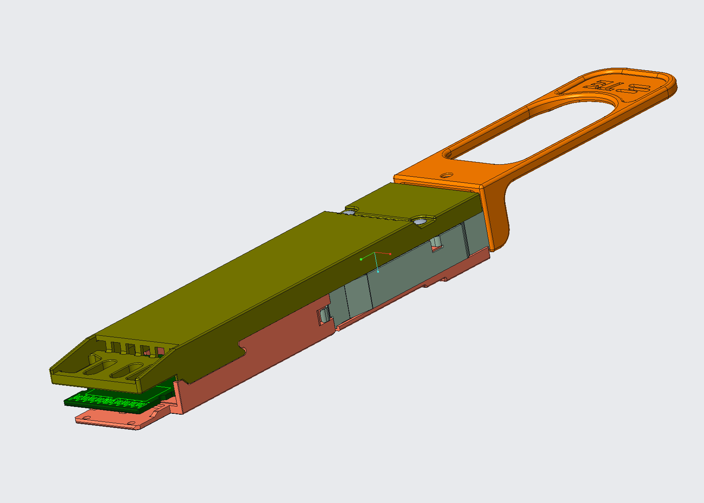
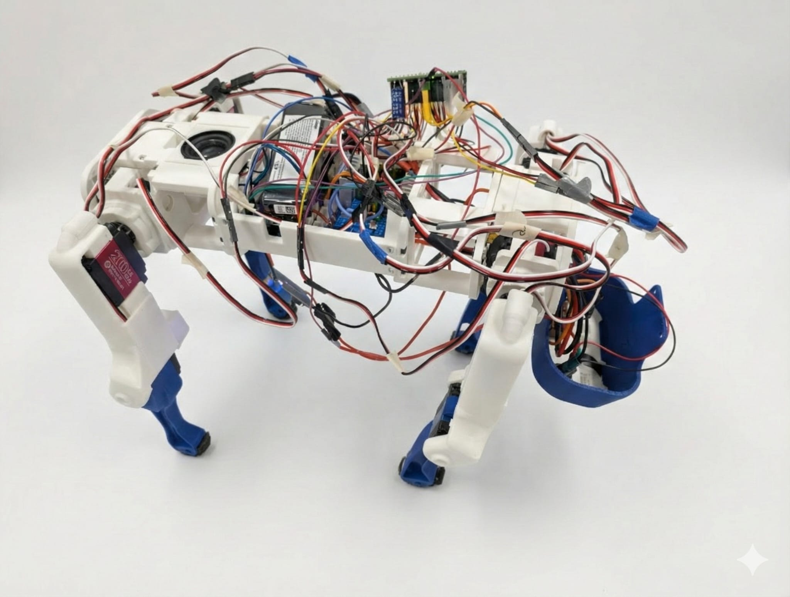

Product development
Translate requirements into CAD, drawings, tolerance decisions, release documentation, and manufacturing-ready hardware.
Creo · SolidWorks · GD&T · PLM/PDMMechanical engineering · Product development · Mechatronics
I’m a Penn State mechanical engineering student building hardware at the intersection of product development, testing, manufacturing, controls, and simulation.


Selected engineering work
Professional release work, controls hardware, iterative product design, and numerical analysis—selected for depth rather than volume.
How I work
Translate requirements into CAD, drawings, tolerance decisions, release documentation, and manufacturing-ready hardware.
Creo · SolidWorks · GD&T · PLM/PDMIntegrate sensors, actuators, electronics, and embedded code through calibrated, staged hardware testing.
C++ · Arduino/Teensy · IMUs · PIDBuild models, test assumptions, compare model fidelity, and communicate limitations without overstating results.
MATLAB · Simulink · Ansys · AbaqusDesign fixtures, investigate failure modes, validate small mechanisms, and convert test data into engineering decisions.
Shock/vibration · RCA · Minitab · qualificationProfessional experience
My professional work spans product design, engineering release, manufacturing requirements, physical validation, reliability testing, and technical documentation.
Advanced 224G connector and test hardware through Creo design, GD&T, statistical tolerance analysis, preliminary release, fixture work, and an automation RFQ.
Designed vibration-fixture hardware, supported qualification testing, analyzed torque failures, and improved reliability-reporting workflows.
More engineering work
Supporting projects extend the portfolio into assistive technology, qualification hardware, and dynamic-system modeling.
About
I’m completing a B.S. in Mechanical Engineering with a Mechatronics minor at Penn State. I’m most engaged by work where geometry, manufacturing, electronics, controls, and testing influence one another.
That perspective has taken me from connector product development and reliability fixtures to assistive devices, quadruped controls, thermal modeling, vibration analysis, and digital hardware.
Contact